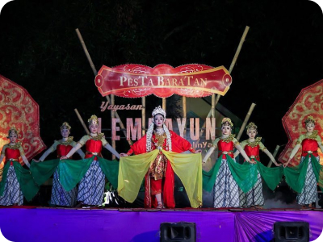

Tentang Kota Jepara
Kota Jepara adalah sebuah kabupaten yang terletak di Provinsi Jawa Tengah, Indonesia. Daerah ini terkenal dengan sebutan Bumi Kartini. jepara memiliki beragam kekayaan budaya, terutama yang terkenal yaitu di bidang seni ukir kayu dan mebel.
Galeri Kota Jepara


